Free
computer Tutorials
|
Free
computer Tutorials
|
|
 back back |
Stay at Home and Learn | ||||
Parental Controls in Windows 7
In the last lesson, you'll learnt how to set up a new user account. However, If the user account you're creating is for a child, you may want to set some Parental Control. We'll do that now. Make sure you are logged in to your own account, and that you are Administrator. (if you're not sure what this means, go back to the last lesson.) To get to the accounts page, click your picture on the Start menu: 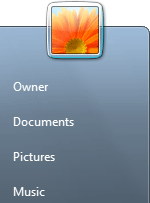 When the User Accounts screen appears, click the link in the bottom left that says "Parental Controls", circled in red in the image below: 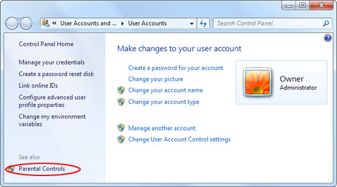 This will take you to a screen showing all the user accounts available: 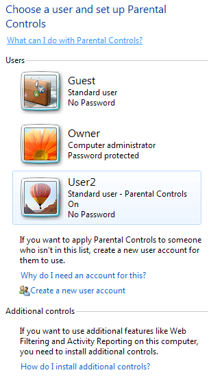 Click on the account you'd like to change, which is User2 in our case. When you click on account, you'll see the following screen: 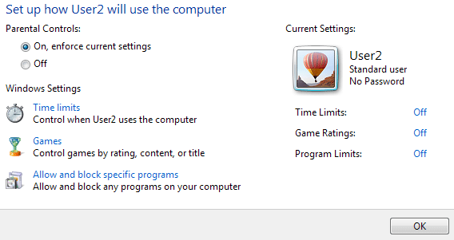 Select the option at the top for "On, enforce current settings". The three options below that will then become available. The first option, Time limits allows you to set when that user can use the computer. Click the link to see the settings below: 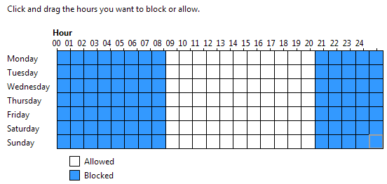 Here, we've blocked access for the user from half past eight at night till 9 in the morning. Click the OK button (not shown above) to get back to the Parental Control options. The Games options let's you control which types of games can be played by the user. Click the Games link to see this screen: 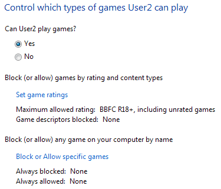 If you don't want this user playing any games at all, select the No option. The rest of the options will then be greyed out. For the less draconian parents, click the Set games
ratings to see this rather long screen: 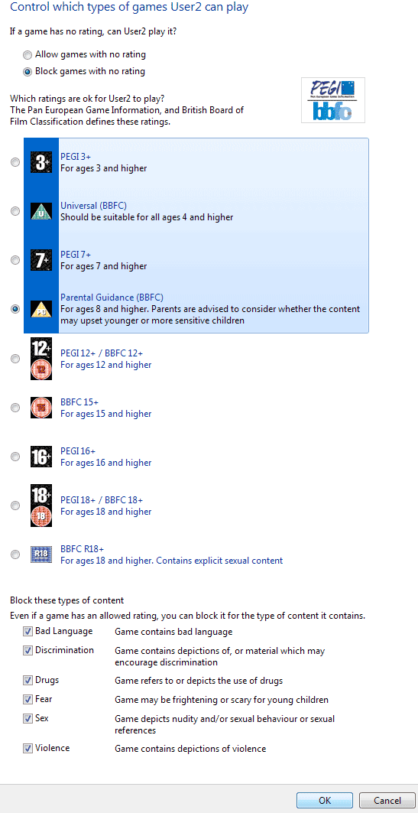 The first thing we've done is to block games that haven't set a rating. (These types of games tend to be from non-mainstream developers.) We've also selected the option for Parental Guidance, which has a PG certificate in the UK. Any game that has a higher category will be blocked. We've also selected all six of the options at the bottom. Click OK to confirm your choices. The other option you have as a parent is to block or allow
specific games: 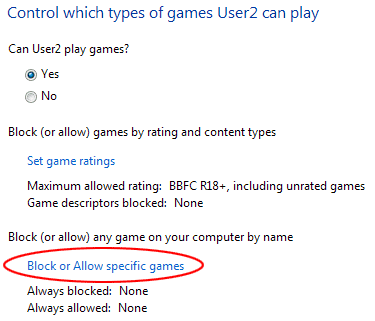 These are games that are installed on the computer for all users. Click the link and you'll see a list of the games you can block or allow. Click OK on the Games section to go back to the Parental Controls section. If you want to block certain programmes, click the link that says "Allow and block specific programmes": 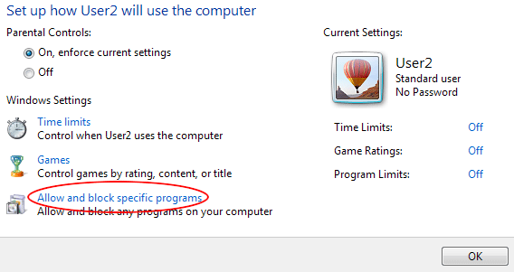 You'll then see the following screen: 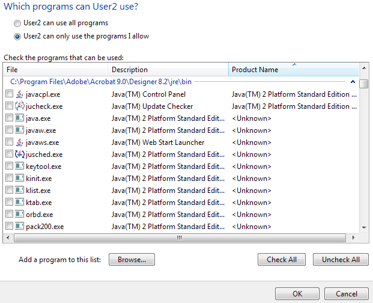 The list is quite long and bewildering! In fact, it so confusing you may be better off just leaving this altogether, unless you're an expert user. When you're done with these options, click the OK button to get back to the Parental Control option. Click OK on this screen and you're done - your new account is ready to be used. To see if it works, click the Start button in the bottom
left of your screen. From the Start menu, select Shut Down > Switch
User: 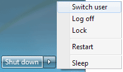 You'll then see the Windows 7 login screen. You new user account should be there, along with your administrator one. Click the new user account to see it in action. If you want to set up another user account, log in as Administrator and start the whole process all over again.
In the next lesson, you'll learn about the basics of your Hard Drive.
|
|||||
|